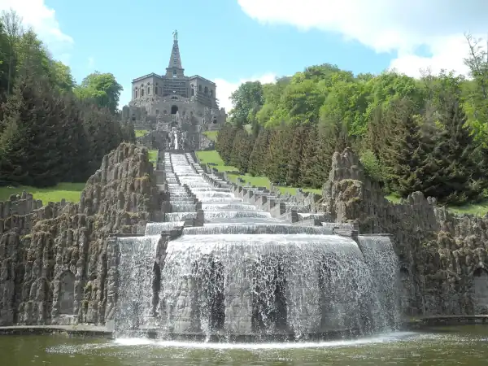
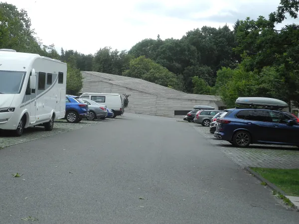

Start / Herkules
Aaron Schiele
geprüft am 09.10.2026
geprüft am 09.10.2026
Was ist der Herkules in Kassel-Wilhelmshöhe?
Der Herkules steht auf 515 Metern über dem Meer, ganz oben im Bergpark. Landgraf Carl ließ ihn vor über 300 Jahren als Krönung seines barocken Parks bauen, und seitdem schaut der Held von oben auf die Stadt. Seit 2013 gehört der Bergpark mit seinen Wasserkünsten zum UNESCO-Welterbe.
Wie hoch ist der Herkules?
Rund 70 Meter misst das ganze Monument. Der Herkules obendrauf ist mit Sockel über 11 Meter groß, auch wenn er von unten im Park eher wie eine kleine Figur wirkt. Wer oben neben ihm steht, merkt erst, wie gewaltig er ist.
Wie viele Stufen hat der Herkules?
Über 500 Stufen führen links und rechts der Kaskaden hinauf, zähl ruhig selbst mit. Ein Geländer gibt es nicht, feste Schuhe und etwas Puste gehören also dazu. Oben wartet dafür der Blick zurück über die Kaskaden hinunter bis zum Schloss.
Am Herkules beginnen die Wasserspiele
Die Wasserspiele starten am Herkules: In der Saison zwischen 1. Mai und 3. Oktober rauscht das Wasser mittwochs, sonntags und an Feiertagen um 14.30 Uhr unterhalb des Oktogons los. Danach folgen Steinhöfer Wasserfall, Teufelsbrücke, Aquädukt und um 15.45 Uhr die Große Fontäne. Die Saison 2026 ist beendet, die Termine für 2027 stehen noch aus.
Besucherzentrum Herkules
Das Besucherzentrum liegt am Parkplatz hinter dem Herkules. Hier gibt es eine Ausstellung, Tickets, einen Shop und kleine Erfrischungen, praktisch auch im Winter, wenn das Oktogon geschlossen ist.
Essen am Herkules
Direkt am Monument gibt es Gastronomie, gut für eine Pause nach dem Aufstieg. Weiter unten im Bergpark liegt die Kaskadenwirtschaft Grischäfer.
Zu Fuß von Bad Wilhelmshöhe zum Herkules
Von der Lindenstraße in Bad Wilhelmshöhe sind es zu Fuß rund 46 Minuten und 2,6 Kilometer, dabei geht es 242 Meter bergauf. Vom Schloss brauchst du etwa 1,5 Stunden über Wege und Treppen.
Unser Tipp: Mit dem Bus hinauf und dann gemütlich zu Fuß hinunter. Vom Herkules bis zum Schloss sind es rund 2,3 Kilometer bergab, mit dem Blick über die Stadt immer vor Augen.
Praktisches: Öffnungszeiten, Eintritt und Anreise
Öffnungszeiten
Im Winter ist das Oktogon geschlossen, das Besucherzentrum aber ganzjährig offen.
| Oktogon und Aussichtsplattform | Besucherzentrum Herkules | |
|---|---|---|
| Zeitraum | 1. April bis 31. Oktober | ganzjährig |
| Tage | Dienstag bis Sonntag und feiertags | Dienstag bis Sonntag und feiertags |
| Uhrzeit | 10 bis 17 Uhr | 10 bis 17 Uhr |
| Ausnahmen | im Winter geschlossen | 24., 25. und 31.12. geschlossen, 1.1. von 12 bis 17 Uhr |
Am Herkules wird immer wieder gebaut. Ein kurzer Blick auf die Seite von Hessen Kassel Heritage vor dem Besuch erspart dir eine gesperrte Plattform.
Eintritt
Der Eintritt läuft über das Tagesticket Wilhelmshöhe.
| Tagesticket Wilhelmshöhe | Preis |
|---|---|
| Erwachsene | 8 Euro |
| ermäßigt | 5 Euro |
| unter 18 Jahren | frei |
| Jahreskarte | 60 Euro |
Das Tagesticket gilt am selben Tag auch für Schloss Wilhelmshöhe und die Löwenburg (mit Führung).
Anreise mit Bus und Auto
- Bus und Bahn: Mit der Tram 4 bis zur Endhaltestelle Druseltal, dann mit Bus 22 oder 23 bis Herkules. Bus 22 fährt halbstündlich. Bus 23 fährt nur an Wasserspieltagen, zusätzlich ab Wilhelmshöhe (Park), der Endhaltestelle der Tram 1.
- Auto: Der Parkplatz Herkules Besucherzentrum liegt hinter dem Herkules. An normalen Tagen sind die ersten 30 Minuten frei. Alles zu Preisen und Wasserspieltagen steht unter Parken am Bergpark.
Häufige Fragen
Was kostet der Eintritt am Herkules?
8 Euro, ermäßigt 5 Euro, unter 18 Jahren frei, über das Tagesticket Wilhelmshöhe. Der Bergpark und der Blick vom Platz am Herkules kosten nichts.
Ist der Herkules im Winter geöffnet?
Das Oktogon nicht, es ist vom 1. April bis 31. Oktober offen. Das Besucherzentrum hat dagegen das ganze Jahr dienstags bis sonntags von 10 bis 17 Uhr geöffnet, und der Blick vom Platz ist immer frei.
Wie komme ich ohne Auto zum Herkules?
Mit der Tram 4 bis Druseltal und weiter mit Bus 22 zum Herkules. An Wasserspieltagen fährt zusätzlich Bus 23.
Wie lange läuft man von unten zum Herkules?
Vom Schloss rund 1,5 Stunden über Wege und Treppen. Von der Lindenstraße in Bad Wilhelmshöhe sind es rund 46 Minuten.
Was sieht man vom Herkules?
Der Blick reicht über den Bergpark auf Schloss Wilhelmshöhe, die Stadt und das Kasseler Becken.
Quellen abgerufen am 09.10.2026
- Hessen Kassel Heritage Herkules · Besucherzentrum Herkules · Wasserspiele
- Stadt Kassel Wasserspiele · Anreise mit dem ÖPNV · Anreise · Parken am Bergpark · Pressemitteilung Beleuchtete Wasserspiele im September
- Deutsche UNESCO-Kommission Bergpark Wilhelmshöhe
- hessenschau.de Wasserspiele in Kassel
- Wikipedia Herkules (Kassel) · Bergpark Wilhelmshöhe
Weiterlesen

Wasserspiele Kassel
Wasserspiele Kassel im Bergpark Wilhelmshöhe: wann sie laufen, Ablauf mit Uhrzeiten, Route vom Herkules zur Fontäne, Eintritt frei, Anreise.
Weiterlesen
Bergpark Wilhelmshöhe Kassel
Bergpark Wilhelmshöhe in Kassel: was dich im UNESCO-Welterbe erwartet, Eintritt (Park frei), ein Rundweg bergab für einen Tag und die Anreise.
Weiterlesen
Wilhelmshöhe Parkplatz
Parken am Bergpark Wilhelmshöhe: die Parkplätze am Herkules und am Schloss, Preise an normalen Tagen und Wasserspieltagen, dazu Bus und Tram.
Weiterlesen